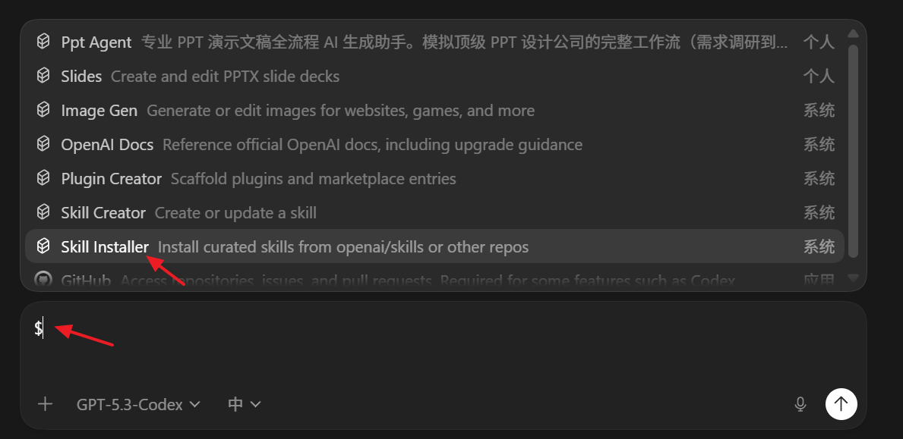
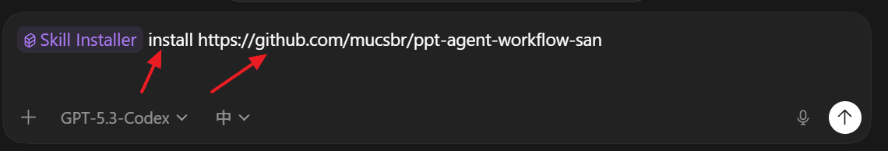

Installing a Skill in OpenAI Codex
OpenAI Codex is an AI coding agent that works directly in your terminal. It can read files, write code, run commands, and iterate — all from a single CLI session. One of its most powerful features is Skills: reusable, markdown-based instruction sets that teach Codex how to handle specific workflows in your project.
What Is a Skill?
A Skill is a .md file that lives in a special folder inside your repo (.codex/skills/ or similar). When Codex detects a relevant skill, it reads the instructions automatically and applies them — no extra prompting needed.
Typical use cases:
- Project-specific build or deploy steps
- Coding conventions and style guides
- Repeated refactoring patterns
- Domain knowledge (e.g., how your API is structured)
Step 1 — Create the Skills Folder & File
In your project root, create the directory and skill file:
mkdir -p .codex/skills
touch .codex/skills/my-skill.md
Open my-skill.md and write your instructions in plain markdown. For example:
---
name: "Run Dev Server"
description: "How to start the local development server for this project."
---
Always use `npm run dev` to start the dev server.
The server runs on port 3000. Never use port 8080.
After starting, verify the server is healthy by checking http://localhost:3000/health.
The YAML frontmatter (name, description) helps Codex identify and surface the skill. The body is freeform markdown — write it as you would write a note for a teammate.
Step 2 — Install & Verify in Codex

After creating the skill file, open a Codex session in your project:
codex
Codex will automatically scan .codex/skills/ on startup. You can confirm a skill was loaded by asking:
"What skills do you have loaded?"
Codex will list all detected skills and their descriptions from the frontmatter.
Step 3 — Use the Skill in a Session

Once loaded, the skill is applied automatically whenever the context is relevant. You can also trigger it explicitly:
"Use the Run Dev Server skill to start the project."
Codex will follow the instructions in the skill file step by step — running the right command, on the right port, with the health check.
Tips
| Tip | Details |
|---|---|
| Keep skills focused | One skill = one workflow. Don't combine unrelated steps. |
| Use concrete commands | The more specific the instruction, the more reliably Codex follows it. |
| Version control your skills | Commit .codex/skills/ to Git so the whole team benefits. |
| Iterate | If Codex doesn't follow a step correctly, rewrite that instruction more explicitly. |
Quick Reference
your-project/
└── .codex/
└── skills/
├── dev-server.md
├── run-tests.md
└── deploy.md
Each file is an independent skill. Codex loads them all at the start of every session.